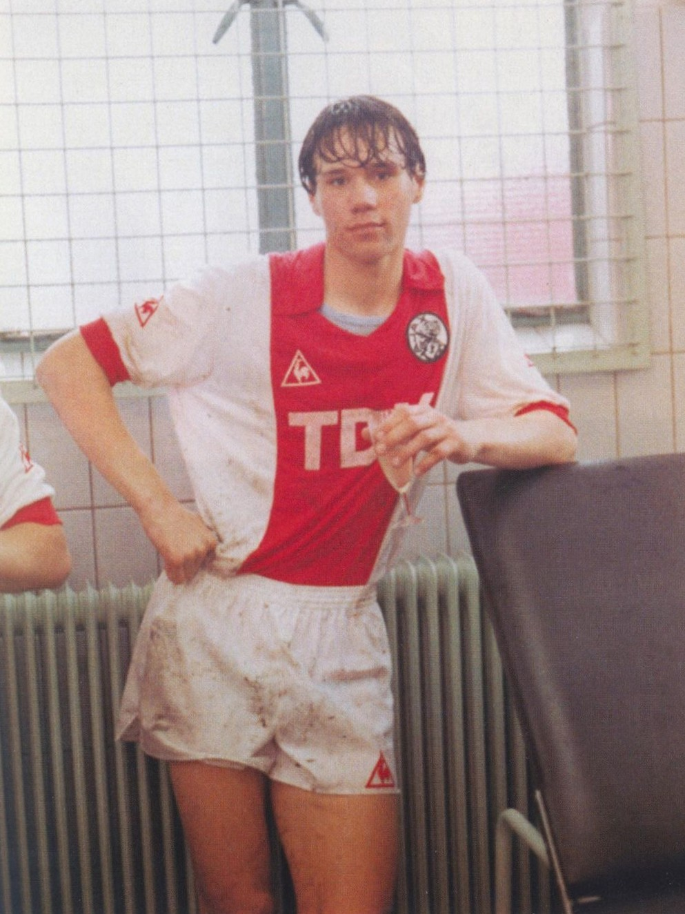
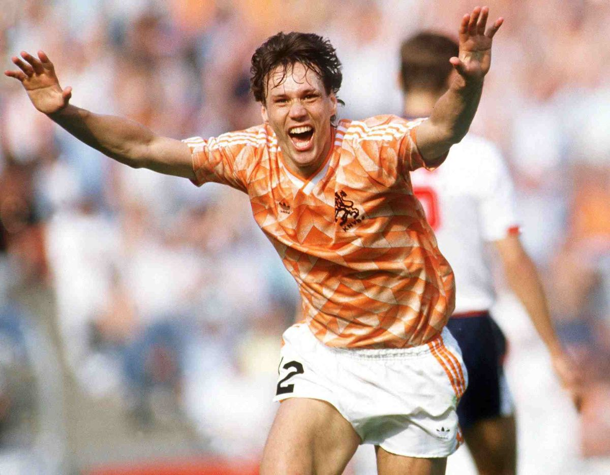
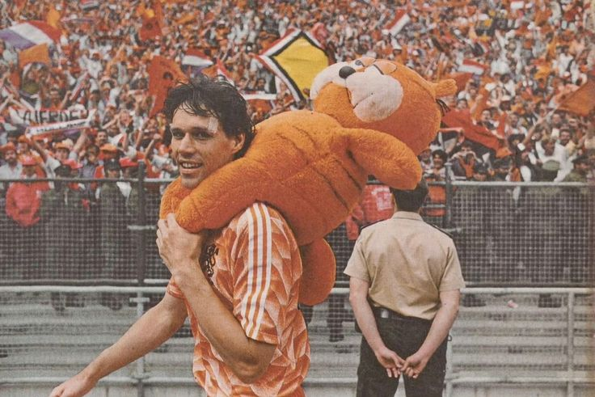
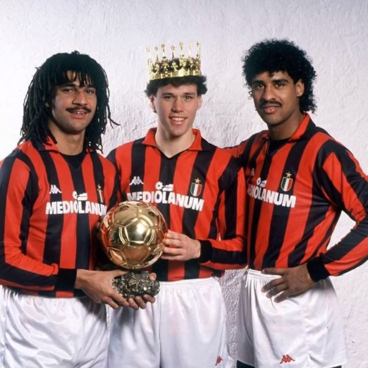
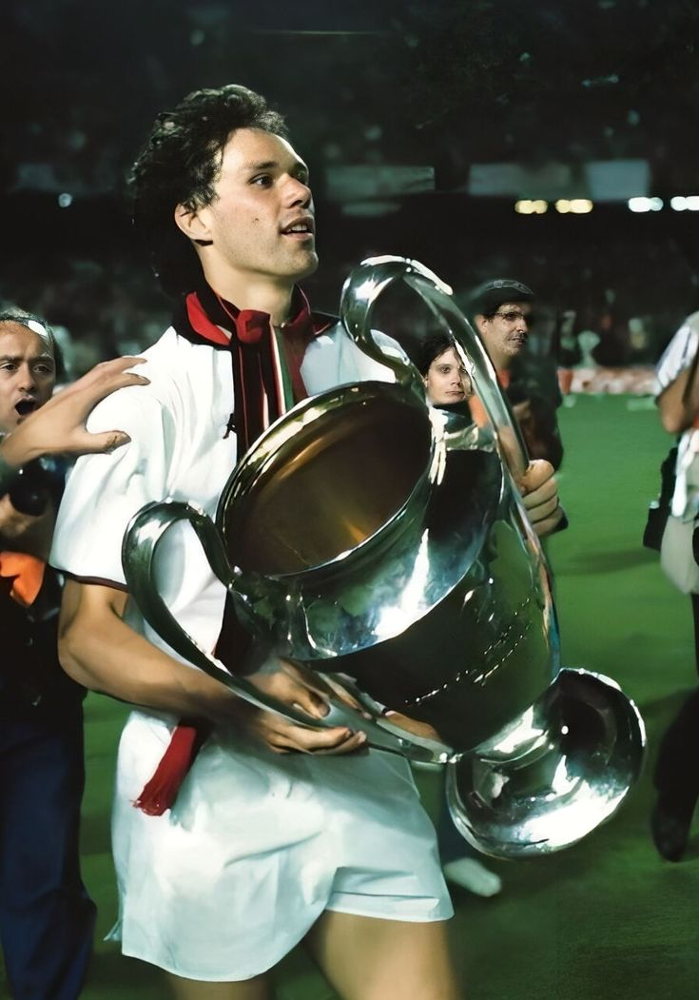
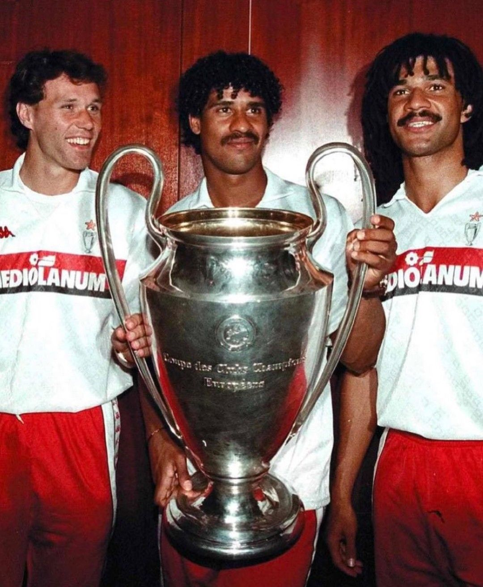

From replacing Johan Cruyff at Ajax to redefining what a striker could be, Marco van Basten was footballing perfection wrapped in fragility. Born in 1964 in Utrecht, he exploded onto the scene at Ajax, scoring 128 goals in 133 games and quickly becoming Europe’s most feared forward. His move to AC Milan in 1987 completed the puzzle, forming part of a legendary side that dominated Italy and Europe. Elegant, ruthless and technically flawless, Van Basten could score every type of goal imaginable. His volley in the Euro 1988 final remains one of football’s most iconic moments. Despite winning three Ballon d’Ors, chronic ankle injuries forced him to retire at just 28, leaving behind a career that felt far too short for someone so great.


Ballon d’Or (3) |

EURO (1) |

Champions League (2) |

Serie A (3) |

Eredivise (3) |

Italian super Cup (2) |

Dutch Cup (3) |

Europapokal (1) |

Super Cup (2) |
| 1988, 1989, 1992/td> | 1988 | 1989, 1990 | 1988, 1992, 1993 | 1983, 1986, 1987 | 1989, 1993 | 1983, 1986, 1987 | 1987 | 1990, 1991 |





